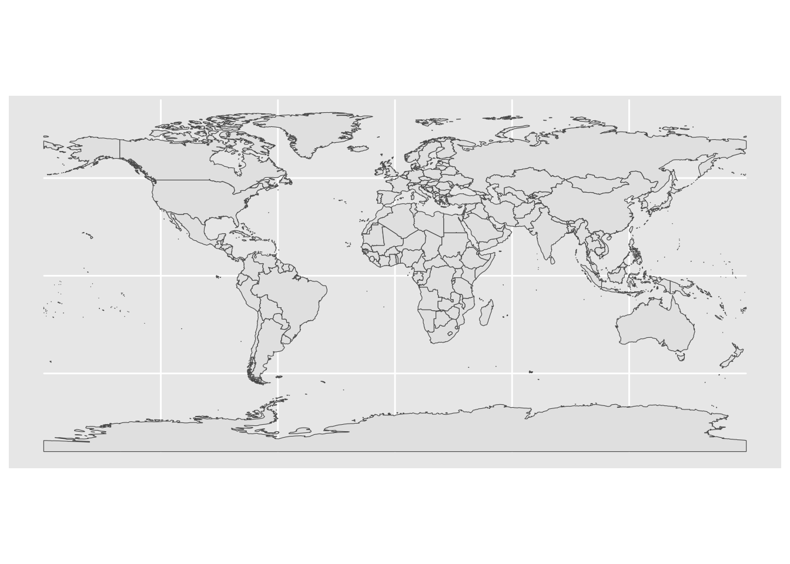
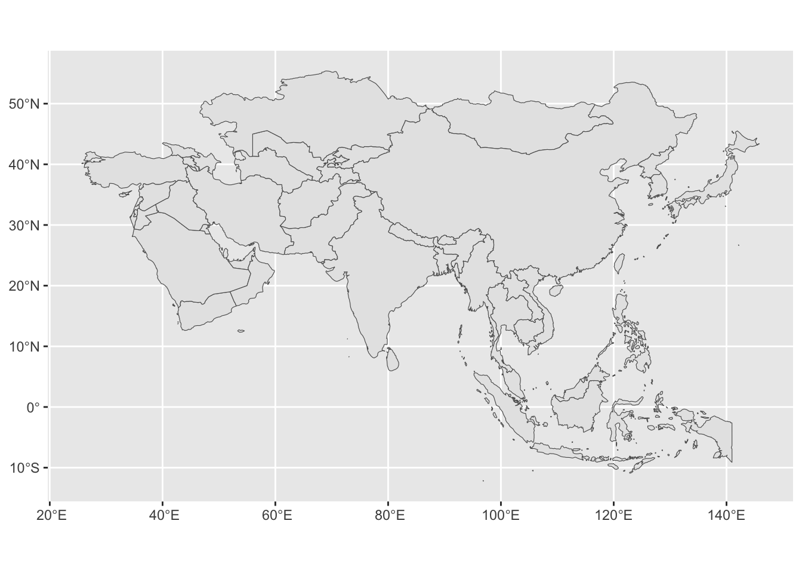
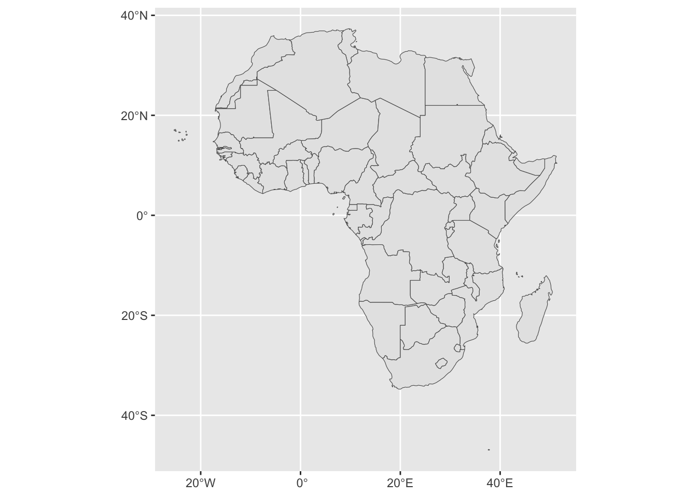
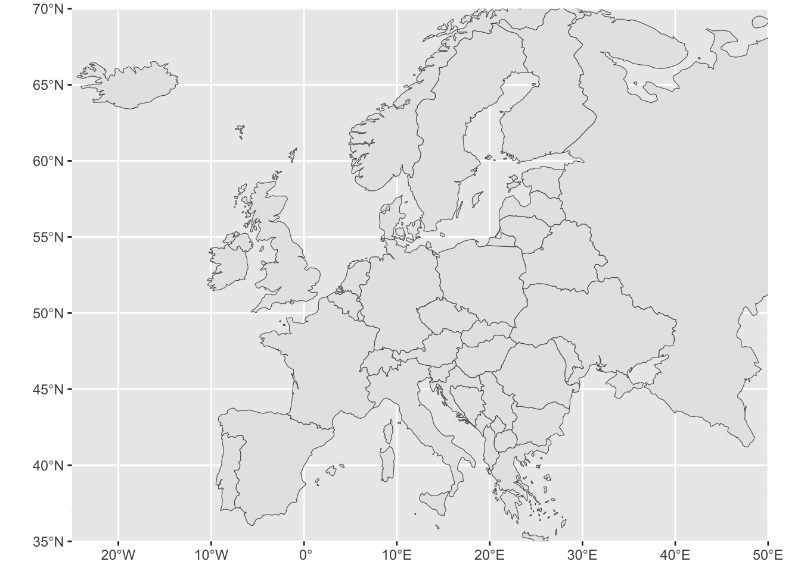
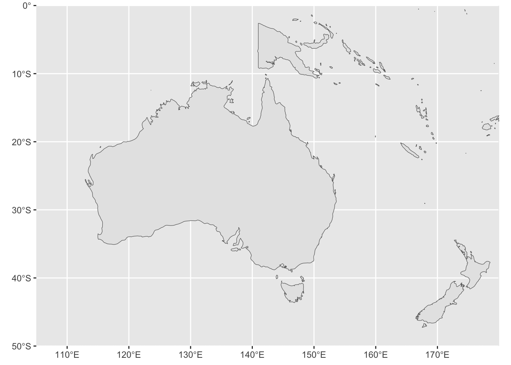
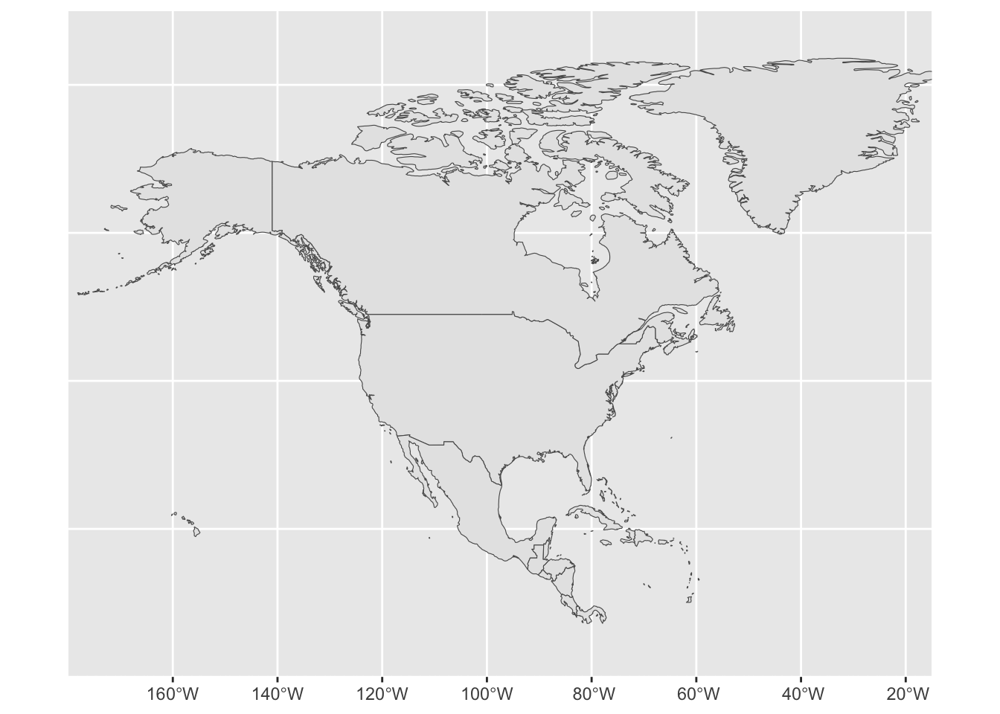

pacman::p_load(tidyverse, rnaturalearth, rnaturalearthdata, sf)17 Human geography lab_Appendix 2
- Load all necessary packages
17.1 World and continents with sf
The above command will install all dependencies required to reproduce the entire lecture
Use the package
sfWe will use the world dataset provided by
spData, to show what sf objects are and how they work.worldis an ‘sf data frame’ containing spatial and attribute columns, the names of which are returned by the function names() (the last column in this example contains the geographic information):
world <- ne_countries(scale = "medium", returnclass = "sf")
class(world)[1] "sf" "data.frame"names(world) [1] "featurecla" "scalerank" "labelrank" "sovereignt" "sov_a3"
[6] "adm0_dif" "level" "type" "tlc" "admin"
[11] "adm0_a3" "geou_dif" "geounit" "gu_a3" "su_dif"
[16] "subunit" "su_a3" "brk_diff" "name" "name_long"
[21] "brk_a3" "brk_name" "brk_group" "abbrev" "postal"
[26] "formal_en" "formal_fr" "name_ciawf" "note_adm0" "note_brk"
[31] "name_sort" "name_alt" "mapcolor7" "mapcolor8" "mapcolor9"
[36] "mapcolor13" "pop_est" "pop_rank" "pop_year" "gdp_md"
[41] "gdp_year" "economy" "income_grp" "fips_10" "iso_a2"
[46] "iso_a2_eh" "iso_a3" "iso_a3_eh" "iso_n3" "iso_n3_eh"
[51] "un_a3" "wb_a2" "wb_a3" "woe_id" "woe_id_eh"
[56] "woe_note" "adm0_iso" "adm0_diff" "adm0_tlc" "adm0_a3_us"
[61] "adm0_a3_fr" "adm0_a3_ru" "adm0_a3_es" "adm0_a3_cn" "adm0_a3_tw"
[66] "adm0_a3_in" "adm0_a3_np" "adm0_a3_pk" "adm0_a3_de" "adm0_a3_gb"
[71] "adm0_a3_br" "adm0_a3_il" "adm0_a3_ps" "adm0_a3_sa" "adm0_a3_eg"
[76] "adm0_a3_ma" "adm0_a3_pt" "adm0_a3_ar" "adm0_a3_jp" "adm0_a3_ko"
[81] "adm0_a3_vn" "adm0_a3_tr" "adm0_a3_id" "adm0_a3_pl" "adm0_a3_gr"
[86] "adm0_a3_it" "adm0_a3_nl" "adm0_a3_se" "adm0_a3_bd" "adm0_a3_ua"
[91] "adm0_a3_un" "adm0_a3_wb" "continent" "region_un" "subregion"
[96] "region_wb" "name_len" "long_len" "abbrev_len" "tiny"
[101] "homepart" "min_zoom" "min_label" "max_label" "label_x"
[106] "label_y" "ne_id" "wikidataid" "name_ar" "name_bn"
[111] "name_de" "name_en" "name_es" "name_fa" "name_fr"
[116] "name_el" "name_he" "name_hi" "name_hu" "name_id"
[121] "name_it" "name_ja" "name_ko" "name_nl" "name_pl"
[126] "name_pt" "name_ru" "name_sv" "name_tr" "name_uk"
[131] "name_ur" "name_vi" "name_zh" "name_zht" "fclass_iso"
[136] "tlc_diff" "fclass_tlc" "fclass_us" "fclass_fr" "fclass_ru"
[141] "fclass_es" "fclass_cn" "fclass_tw" "fclass_in" "fclass_np"
[146] "fclass_pk" "fclass_de" "fclass_gb" "fclass_br" "fclass_il"
[151] "fclass_ps" "fclass_sa" "fclass_eg" "fclass_ma" "fclass_pt"
[156] "fclass_ar" "fclass_jp" "fclass_ko" "fclass_vn" "fclass_tr"
[161] "fclass_id" "fclass_pl" "fclass_gr" "fclass_it" "fclass_nl"
[166] "fclass_se" "fclass_bd" "fclass_ua" "geometry" - Make sophistocated and professional looking map of World
world.plot = ggplot() +
geom_sf(data = world)
world.plot 
We will begin to get to know the basics of geographic data in R by using the “world” dataset in the package.
First let’s see what information is in the “world” dataset. Get the names of the variables in the world dataset.
Filter the population and GDP data from World map for better understanding the data structure.
Plot the GDP percapita map of the world:
Prepare Africa map by highlighting Zambia
# Select just the continent of Africa
africa <- world %>%
filter(region_un %in% "Africa")- Check the type of data
class(africa)[1] "sf" "data.frame"names(africa) [1] "featurecla" "scalerank" "labelrank" "sovereignt" "sov_a3"
[6] "adm0_dif" "level" "type" "tlc" "admin"
[11] "adm0_a3" "geou_dif" "geounit" "gu_a3" "su_dif"
[16] "subunit" "su_a3" "brk_diff" "name" "name_long"
[21] "brk_a3" "brk_name" "brk_group" "abbrev" "postal"
[26] "formal_en" "formal_fr" "name_ciawf" "note_adm0" "note_brk"
[31] "name_sort" "name_alt" "mapcolor7" "mapcolor8" "mapcolor9"
[36] "mapcolor13" "pop_est" "pop_rank" "pop_year" "gdp_md"
[41] "gdp_year" "economy" "income_grp" "fips_10" "iso_a2"
[46] "iso_a2_eh" "iso_a3" "iso_a3_eh" "iso_n3" "iso_n3_eh"
[51] "un_a3" "wb_a2" "wb_a3" "woe_id" "woe_id_eh"
[56] "woe_note" "adm0_iso" "adm0_diff" "adm0_tlc" "adm0_a3_us"
[61] "adm0_a3_fr" "adm0_a3_ru" "adm0_a3_es" "adm0_a3_cn" "adm0_a3_tw"
[66] "adm0_a3_in" "adm0_a3_np" "adm0_a3_pk" "adm0_a3_de" "adm0_a3_gb"
[71] "adm0_a3_br" "adm0_a3_il" "adm0_a3_ps" "adm0_a3_sa" "adm0_a3_eg"
[76] "adm0_a3_ma" "adm0_a3_pt" "adm0_a3_ar" "adm0_a3_jp" "adm0_a3_ko"
[81] "adm0_a3_vn" "adm0_a3_tr" "adm0_a3_id" "adm0_a3_pl" "adm0_a3_gr"
[86] "adm0_a3_it" "adm0_a3_nl" "adm0_a3_se" "adm0_a3_bd" "adm0_a3_ua"
[91] "adm0_a3_un" "adm0_a3_wb" "continent" "region_un" "subregion"
[96] "region_wb" "name_len" "long_len" "abbrev_len" "tiny"
[101] "homepart" "min_zoom" "min_label" "max_label" "label_x"
[106] "label_y" "ne_id" "wikidataid" "name_ar" "name_bn"
[111] "name_de" "name_en" "name_es" "name_fa" "name_fr"
[116] "name_el" "name_he" "name_hi" "name_hu" "name_id"
[121] "name_it" "name_ja" "name_ko" "name_nl" "name_pl"
[126] "name_pt" "name_ru" "name_sv" "name_tr" "name_uk"
[131] "name_ur" "name_vi" "name_zh" "name_zht" "fclass_iso"
[136] "tlc_diff" "fclass_tlc" "fclass_us" "fclass_fr" "fclass_ru"
[141] "fclass_es" "fclass_cn" "fclass_tw" "fclass_in" "fclass_np"
[146] "fclass_pk" "fclass_de" "fclass_gb" "fclass_br" "fclass_il"
[151] "fclass_ps" "fclass_sa" "fclass_eg" "fclass_ma" "fclass_pt"
[156] "fclass_ar" "fclass_jp" "fclass_ko" "fclass_vn" "fclass_tr"
[161] "fclass_id" "fclass_pl" "fclass_gr" "fclass_it" "fclass_nl"
[166] "fclass_se" "fclass_bd" "fclass_ua" "geometry" - Make professional looking map of
Asia
asia <- world[which(world$continent == "Asia"),]
asia.plot = ggplot() +
geom_sf(data = asia)
asia.plot 
- Make professional looking map of
Africa
africa <- world[which(world$continent == "Africa"),]
africa.plot = ggplot() +
geom_sf(data = africa)
africa.plot 
- Make professional looking map of
Europe
europe <- world[which(world$continent == "Europe"),]
ggplot(europe) +
geom_sf() +
coord_sf(xlim = c(-25,50), ylim = c(35,70), expand = FALSE)
- Make professional looking map of
Oceania
oceania <- world[which(world$continent == "Oceania"),]
ggplot(oceania) +
geom_sf() +
coord_sf(xlim = c(105,180), ylim = c(-50,0), expand = FALSE)
- Make professional looking map of
North America
north_america <- world[which(world$continent == "North America"),]
ggplot(north_america) +
geom_sf() +
coord_sf(xlim = c(-180,-15), ylim = c(0,90), expand = FALSE)